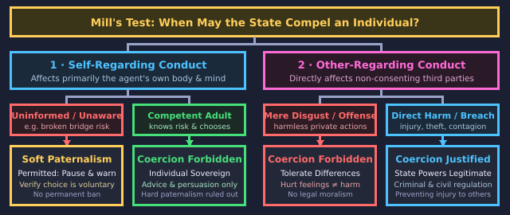
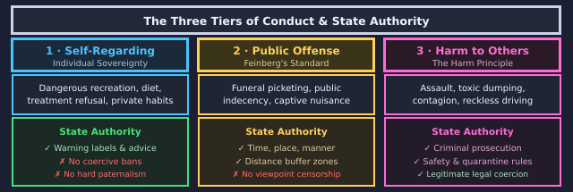

The Emerald Constitution
The Wizard is gone, carried off in his balloon. Princess Ozma has found his old constitution, and it is "a document with problems." She is convening a council to rewrite it, and you are on the council.
Use → (or Next) to advance and reveal points. F = fullscreen.
Before the First Session
Five gut-checks, with no right answers. Say where you stand. The council will return to them once the new constitution is ratified.

The Wizard's Handiwork
Ozma reviews the legal code, which fails in two opposite directions:
- It is smotheringly paternalistic, locking green spectacles onto citizens for their own cheerful comfort.
- Yet it abandons public safety by leaving toxic poppy fields unfenced and ignoring market fraud.
- The Scarecrow spots the defect: it protects citizens from themselves while abandoning them to each other.

The Council Consults a Book
Glinda produces John Stuart Mill's 1859 classic, On Liberty.
- Mill feared the tyranny of the majority, where society coerces dissenters into conformity.
- His central question matches the council's: when may society rightfully compel an individual?
- His answer is what he called "one very simple principle" to govern all state coercion.
One Very Simple Principle
"The only purpose for which power can be rightfully exercised over any member of a civilized community, against his will, is to prevent harm to others."
- A person's own physical or moral good is never a warrant for state coercion; you may plead or warn, but never compel.
- Over himself, over his own body and mind, the mature individual is sovereign.
- The principle covers competent adults, excluding children and those unable to reason for themselves.
Why Value Liberty?
As a utilitarian, Mill argues liberty must earn its keep by advancing human flourishing:
- Authorities are fallible; overriding individuals bets that the state can never be mistaken.
- Society learns which ways of life succeed only by permitting open experiments in living.
- Choosing for oneself is essential to flourishing, anchoring liberalism's neutrality on how to live.
The First Vote
The Council's Minutes
The Line Everything Depends On
Affects primarily you: your body, personal risks, diet, and plans. Society may advise and warn, but cannot compel.
An adult who eats poorly, gambles personal savings, or climbs dangerous peaks alone.
Directly risks harm to others: their bodies, property, or legal rights. Here state coercion is legitimate.
A manufacturer who dumps toxic waste into a drinking river, or sells tainted food.
The Intervention Test


The Poppy Question
The toxic poppy fields model hazardous recreation and drug policy:
- Banning entry to protect adults from foolishness is hard paternalism, overriding voluntary choice.
- Uninformed wanderers are different: pausing someone unaware of danger is permitted soft paternalism.
- Mill backs hazard signposts, poison labels, and child bans, which inform agency without prohibiting it.
Decision Point: The Poppy Fields
Not graded. The council is split three ways and so is the room.

Mill's Bridge
A traveler steps toward an unsafe bridge with no time to warn him. May you seize him?
- Mill says yes: briefly stopping him honors his presumed desire not to fall into the chasm.
- Once informed of the broken planks, an adult who still insists on crossing must be let through.
- This distinguishes soft paternalism (verifying choice) from hard paternalism (overriding it).
Marking Up the Draft
The Council's Docket

The Pamphleteer
A pamphleteer publishes an article claiming grain merchants starve the poor:
- Mill argued opinions that corn dealers starve the poor must circulate freely in print.
- However, shouting those same words to an angry, torch-bearing mob outside a dealer's home may be punished.
- Print invites deliberation, whereas inciting an agitated crowd creates an immediate hazard of harm.
"What If the Pamphlet Is False?"
The merchants argue the claims are false. Why protect falsehood? Mill's three reasons:
- If a silenced view turns out to be true, society loses truth because censors are never infallible.
- If it contains partial truth, debate provides the missing piece to correct prevailing ideas.
- Even completely false views prevent received truths from decaying into unexamined dogma.
The Night It Almost Went Wrong
The Problem of Deep Offense
What about conduct that causes no physical injury or financial loss, but generates intense moral outrage? Consider a radical group picketing private family funerals with offensive slogans, like the real-world Snyder v. Phelps dispute.
Feinberg's Offense Principle
A century after Mill, philosopher Joel Feinberg argued the Harm Principle needs a carefully restricted supplement:
- Subjective offense, outrage, and disgust differ from harm because they do not damage a person's vital interests or rights.
- However, profound and unavoidable public offense (such as picketing a private funeral) may warrant narrow legal limits.
- Feinberg's balancing test evaluates how intense the offense is, whether it was avoidable, and its social value.
Hedging the Offense Principle
Liberal systems adopt narrow compromises when regulating public offense:
- Regulations impose reasonable time, place, and manner buffer zones around funerals rather than banning viewpoints.
- The danger is that offense is elastic, allowing majorities to label controversial opinions offensive.
- If hurt feelings count as harm, the Harm Principle collapses and paternalism returns under a new name.
Mapping State Authority

The Health Chapter
The council examines medical law, where old contradictions were most glaring:
- The old code forced patients refusing a doctor's remedy into restraint, practicing hard paternalism.
- Yet during infectious epidemics, it provided zero quarantine rules or reporting to protect the public.
- The old law repeated its twin errors: coercing competent individuals while abandoning public health.
The Right to Refuse Treatment
Consider a competent adult patient who declines surgery, preferring comfort care at home:
- Forcing medical treatment on a competent patient under restraint is textbook hard paternalism.
- Mill insists that over one's own body, the individual is sovereign: doctors may plead, but never compel.
- Modern bioethics enshrines this principle as patient autonomy and the right to informed refusal.
Strike or Keep?
Epidemics and Harm to Others
The council considers public health measures during an airborne epidemic:
- Refusing vaccine or quarantine during an outbreak differs fundamentally from refusing personal surgery.
- An infected person transmits pathogens to vulnerable infants and immunocompromised neighbors.
- Because transmission is other-regarding, preventing harm to others justifies public health mandates.
The Safety Harness Debate
Mandatory wagon harnesses mirror modern controversies over seatbelt and helmet laws:
An unharnessed driver risks primarily his own life. Compelling safety equipment coerces competent adults for their own good.
"Post crash fatality statistics, but let adults choose."
Drivers rarely crash alone: emergency crews face hazards, public funds pay trauma care, and dependents lose support.
"Injuries impose heavy financial burdens on the community."
Decision Point: The Safety Harness
Voting the Health Chapter
Voluntary Choice
Operators engineer commercial poppy fields with maze-like paths and hidden exits:
- The principle protects voluntary choice, but manipulative design actively subverts decision capacity.
- Real-world analogs include casino architecture, loot boxes, and infinite scroll designed to defeat self-control.
- Restricting exploitative design targets commercial deception rather than penalizing personal choice.
Harms With No Single Victim
A core challenge that 19th-century liberalism struggled to address at scale is aggregate or diffuse environmental harm:
- A single factory chimney or car exhaust pipe causes no measurable injury on its own.
- However, thousands of emissions combine to produce toxic smog that damages an entire population's lungs.
- The Harm Principle easily justifies environmental regulation once the law accounts for cumulative contributions to collective harm.
When Falsehood Causes Rapid Harm
Another major contemporary challenge is viral medical misinformation, such as false claims that a vaccine is lethal:
- Mill assumed public deliberation provides ample time for truth to refute and overtake dangerous falsehoods.
- When panic spreads instantly during a lethal outbreak, third parties suffer preventable death before rebuttal can take effect.
- These modern problems illustrate where the Harm Principle transitions from a neat formula into a complex constitutional balancing test.
Critics of Liberal Neutrality
The council hears formal dissents from traditions that argue the state should promote goodness, not merely prevent harm:
- Perfectionism, originating with Aristotle, holds that political institutions should actively cultivate moral excellence and virtue.
- Legal moralism asserts that a society requires a shared moral code to survive, giving the law authority to punish harmless immorality.
- Lord Devlin famously defended this view against H.L.A. Hart in 1960s Britain, arguing private vice undermines social order.
The Communitarian Challenge
A deeper critique questions whether unencumbered, sovereign individuals exist:
- Communitarians argue human identities and duties are deeply rooted in community ties.
- Because our lives are interdependent, almost no significant action is purely self-regarding.
- Liberals reply that using interdependence to justify coercion invites authoritarianism.
The Hardest Vote
The Drafting Glossary

Ratification Day
"Citizens are sovereign over themselves. The law reaches only harm to others."
- Struck: forced medical care, lifestyle mandates, and private morality bans.
- Added: river pollution controls, consumer fraud rules, and epidemic quarantine.
- Open: seatbelt-style harness rules remain active debates over diffuse harm.
Revisit Your Instincts
Here is where you stood before the first session. Re-rate each one and see whether the council's work moved you. Staying put is fine, so long as you can now defend the spot in Mill's own terms.
The Council Adjourns
The old constitution is archived, replaced by Mill's liberal charter:
- Power is legitimate solely to prevent non-consensual harm to others.
- Liberty rests on fallibility, experiments in living, and individuality.
- The framework distinguishes self-regarding choice from other-regarding harm.
Principles for Modern Governance
- Freedom of speech protects even false or unpopular opinions, penalizing speech only when circumstances create direct incitement to harm.
- Medical ethics respects competent treatment refusal as self-regarding, while justifying quarantine and vaccine rules to halt contagion.
- Ongoing legal debates center on diffuse collective harms, behavioral manipulation, and competing communitarian or perfectionist ideals.
Visit every slide, complete each interactive check, and submit both belief surveys.